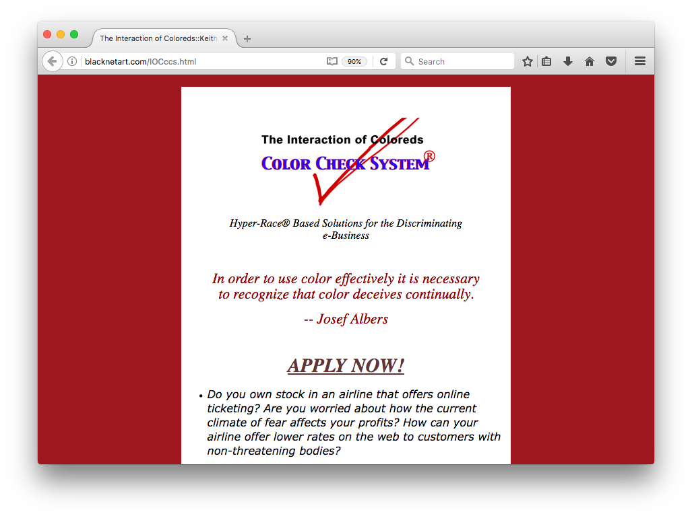
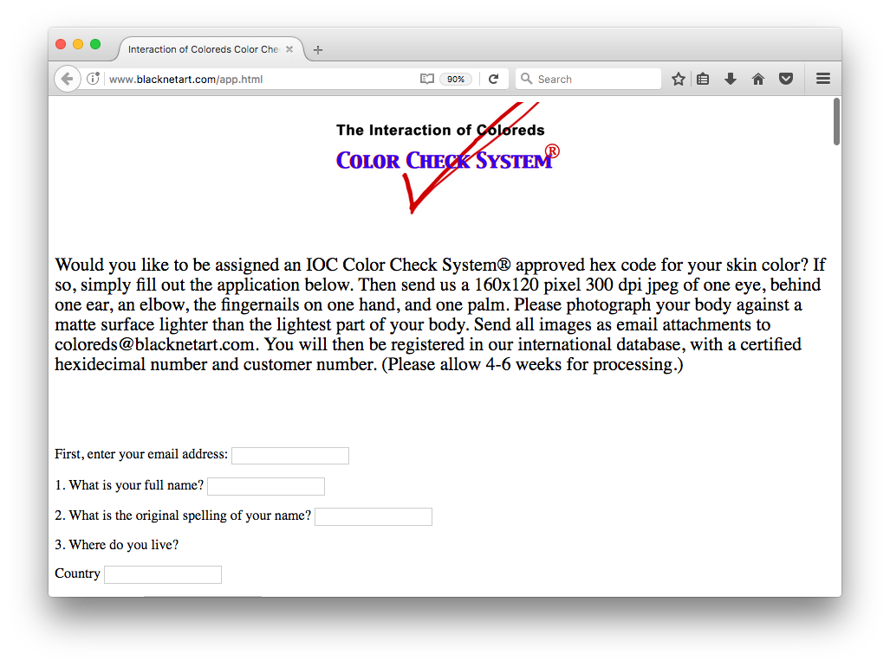

The Interaction of Coloreds is a browser-based work that administers a “digital brown paper bag test” to visitors, toying with historical systems of racial categorization and contemporary discourse around digital surveillance.It begins with a popup window, divided into four quadrants, featuring animations that rapidly cycle through images of body parts in various shades of brown. Mousing over each quadrant reveals a different message: “If you’re white you're right.” “If you’re black get back.” “If you’re brown stick around.” “If you’re yellow you’re mellow. This work highlights to historical implications of colorism against Black Americans and how it unfortunately lives on today.
View the artwork here.